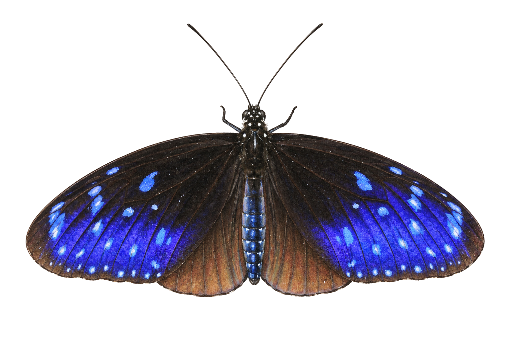

マダラチョウ類 · 130 / 165
ツマムラサキマダラ
Euploea mulciber

特徴・見分け方
前翅に青紫色の強い光沢がある。雌の後翅は白い筋がよく発達する。
雌雄の違い
雄は青紫色の光沢が強い。雌は後翅の白い線状斑がよく発達する。
大きさ
開張（翅を開いた幅）80–90 mm。シンガポールNParks・亜種mulciberの値で、沖縄産の測定範囲ではない。地域・亜種・資料による違いがある。
沖縄の島別記録
記録のある島：沖縄本島、石垣島、西表島、与那国島、竹富島、小浜島、黒島、波照間島、宮古島、久米島、伊平屋島、伊是名島、伊江島、古宇利島、瀬底島、屋我地島、渡嘉敷島、座間味島、阿嘉島、南大東島、伊良部島、下地島、来間島、多良間島、鳩間島、由布島、慶留間島、久高島、浜比嘉島、津堅島、粟国島、渡名喜島。記録島の抜粋で、すべての記録地を列挙したものではない。
生息環境
森林の縁、林道、低木のある明るい場所。
生態・識別上の補足
県内に記録・発生資料がある。各島の現在の多さや、毎年の発生を保証するものではない。
幼虫・食草
ガジュマル、アコウなどイチジク属と、リュウキュウテイカカズラなど。
参照元・参考資料
- 日本の蝶：形態・雌雄差
資料内の参照日: 2026-11-10 - 沖縄蝶類生態図鑑：ツマムラサキマダラ
資料内の参照日: 2026-11-10 - 大きさの追加出典：シンガポールNParks・亜種wallacei
資料内の参照日: 2026-11-10
掲載内容は提供データ（2026年11月10日更新）に基づきます。記録島は現在の定着や観察の容易さを保証しません。イラストは参考表現で、同定には実物の形態と参照資料を併せて確認してください。